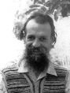

Илья Миклашевский
РУБАЙАТ
1977
* * *
Мне надоела жизни канитель,
мне надоела мягкая постель,
хочу лететь вперёд, навстречу ветру -
пойду в центральный парк на карусель.
* * *
Мечтаем мы о рае на земле,
хоть знаем мы: нет рая на земле,
и мы уничтожаем нашу землю
за то, что нету рая на земле.
1978
* * *
Известно нам, что ложь - большое зло.
Однако это - наше ремесло.
Есть компромисс возможный - полуправда.
И до чего же это довело...
* * *
Позвольте мне эмира превознесть.
Эмир в заботах о народе весь,
деньгопечатню новую построил -
теперь у всех помногу денег есть.
1979
* * *
Жизнь - это чаша сладкого вина,
хватай и поскорее пей до дна,
будь зорок, с кулаками наготове,
не то, считай, отобрана она!
* * *
Жизнь - это путь сквозь холод и метель,
поспать, поспать - единственная цель.
Но стоит задремать хоть на минуту -
найдёшь в сугробе гроб, а не постель.
* * *
Жизнь - это бег на месте. Но спешить
ты должен, чтобы заживо не сгнить.
Умрёт в тоске понявший: нет движенья.
Уж лучше век в неведеньи прожить.
* * *
Копал сквозь небо, землю и песок,
постиг Вселенной потаённый сок,
в гранит, на коем всё стоит, вгрызался...
Но дна картонного достичь не смог.
* * *
Жизнь - это бег на месте - раз-два-три.
Но если остановишься - смотри:
засохнешь на корню без моциона.
Ты создан бегать, что ни говори.
* * *
Жизнь - это бег на месте. Счастлив тот,
кто этого до смерти не поймёт,
кто не наказан разумом и зреньем,
кто озабоченно спешит вперёд.
* * *
Смерть - это отдых от земных сует,
спокойный сон - бессонницы там нет.
Так почему же мы боимся смерти?
Так нас задумал Бог - и весь ответ.
* * *
Устал брести неведомо куда.
Едва горит последняя звезда.
Настанет отдых - и года ненастья
ты вспомнишь с благодарностью тогда.
* * *
Я утром встал с постели - а зачем?
Из дому вышел, сел в метро - зачем?
Весь день до вечера просуетился -
зачем? Нет, почему, а не зачем.
* * *
То, что меня наказывает Бог,
доказывает: существует Бог,
доказывает: обо мне он помнит.
Что лучше может быть - со мною Бог!
* * *
Я утром встал, куда-то побежал,
что сильно занят, я воображал.
Зачем? Затем, что жизнь есть бег на месте,
тот счастлив, кто бежит как на пожар.
* * *
Есть силы для борьбы и для труда -
в движеньи видишь жизни смысл тогда,
потом придут болезни и усталость,
и вдруг поймёшь: движенье - суета.
* * *
Понять мы сами можем, да иль нет,
мы мыслим, в нас нельзя вдолбить ответ.
Однако вдалбливают в нас вопросы,
мешая выходить на верный след.
* * *
Ты рубаёв помногу не читай,
прочтёшь одно - часок поразмышляй,
на всё уйдут какие-нибудь сутки,
а мудрости бесценен урожай!
* * *
Не сотвори кумира. Я стою,
жду - нет его, и нет, и нет. Свою
троллейбусу молитву посылаю.
Чтобы проехать - душу продаю.
* * *
Я мудреца спросил: зачем мы есть?
Мудрец ответил: чтобы жизнь разнесть
на ближние и дальние планеты,
чтоб как Земле Галактике расцвесть.
* * *
Жизнь - что растенье, разум - что цветок.
Цветок увянет - час наш недалёк.
но семена-ракеты разнесутся -
и новый где-нибудь взойдёт росток.
* * *
Старик о кладе сыну рассказал
и умер. Сын весь двор перекопал,
но не нашёл - и посадил картофель.
Вот так и в нас привычки Бог создал.
* * *
Без Бога и без цели я брожу;
что цель - я и забот не нахожу.
Однако труд порою в гроб вгоняет -
чего же я, бездельник, всё брюзжу.
* * *
Всё тщетней я понять пытаюсь мир,
в руках летуча мудрость как эфир.
Ну а когда я что-то понимаю,
то надуваюсь важный как пузырь.
* * *
Его призванье - людям помогать,
и он умеет людям помогать,
он знает, что им нужно, этим людям,
а что они не знают - наплевать.
* * *
Пятак я Христа ради получил,
купить отмычку на него решил,
чтоб у подавшего украсть пять тысяч,
но продавец полсотни запросил.
* * *
Безбожие к язычеству ведёт:
скажите, разве не язычник тот,
кому нарочно портится погода,
кому назло его ботинок жмёт.
* * *
Цивилизацию браню, браню,
а сам-то прячусь за её броню.
Я не люблю её как раз за это:
за то, что душу продал ей мою.
* * *
Ты как комета мимо пролетела,
сверкающим серпом меня задела.
И большего не смею я просить,
комете до букашки что за дело.
* * *
Мне кажется: я горы сворочу,
подайте горы, я их сворочу.
Никто не подаёт, кругом болото,
а кочки воротить я не хочу.
* * *
Создавшему нас надо доверять,
а не стараться жизни смысл понять,
он всё предусмотрел, нас создавая,
и голову мы можем не ломать.
* * *
Все предчувствуют землетрясение:
птицы, звери, рыбы и растения;
только человек всегда спешит,
потому не чувствует знамения.
* * *
А я бреду без Бога и без цели,
передвигаю ноги еле-еле.
Куда спешить? Вокруг мелькают годы,
и руки от безделья онемели.
* * *
В бреду прозренья пишет человек,
а на дворе меж тем 20-й век
свои стальные расправляет плечи.
И вышло, как писал он - Красный Смех.
* * *
Голодные восстали, взяли власть,
кровь сытых переулками лилась.
Потом властям нужны были фургоны -
туда от голода умерших класть.
* * *
Свинья ест желуди, ругая дуб.
А человек - он разве меньше глуп?
Как варвар - Рим, он покорил природу,
сломав дворцы, настроивши халуп.
* * *
Еще трубят победу трубы,
и успевают прятать трупы,
но наши лошади в болоте по колено,
и интенданты стали скупы.
* * *
В десятках люстр пылают свечи,
течёт вино в честь нашей встречи.
Мне крикнуть хочется: "Спасите!",
а я бросаю сотни певчим.
* * *
Среди развалин мраморных дворцов,
среди могил заросших их творцов,
стоят убого хижины германцев,
как ныне города среди лесов.
* * *
А я, дурак, всё журавля хочу,
сойду с ума иль в небо улечу...
Но нет, Бог милостив, я успокоюсь,
тогда синицу в руку получу.
1980
БЕСКОРЫСТНЫЙ ЧЕЛОВЕК
Страшнее может ли быть:
его нельзя подкупить,
его медвежьи услуги
ничем не отворотить.
* * *
Сквозь ночь, сквозь холод, сквозь туман иду
или же розы нюхаю в саду -
всё это лишь в стихах, а не буквально:
нельзя же всё про сон да про еду.
* * *
Ты не доволен жизнью? - не беда:
ведь выход-то не заперт никогда.
Но если уж ты захотел остаться,
не лицемерь, не жалуйся тогда.
* * *
Кому-то хуже во сто раз, чем нам,
но радости свои есть даже там;
и мы самодовольно полагаем,
что тонких чувств господь не дал скотам.
* * *
Кому-то лучше во сто раз, чем нам,
а он всё хнычет, молится божкам;
его несчастья от неврастении,
в них не поверишь, не узнав их сам.
* * *
Мы суетимся и под нос ворчим,
и вот однажды Бога прогневим,
придут болезнь, война или тюрьма,
уйдёт день нынешний, невозвратим.
* * *
Корабль ведёт отнюдь не капитан,
давно уж им играет океан,
а капитан лишь об одном хлопочет -
чтоб не разбушевался ураган.
* * *
Года кровавых бурь над миром мчали,
но вот - надолго, нет ли - замолчали.
А мы про всё забыли в суете
и поводы находим для печали.
* * *
Завод иль главк, НИИ или продмаг -
везде, как говорят, сплошной бардак.
Придут китайцы, всё это исправят,
но лучше бы уж оставалось так.
* * *
Зачем мы здесь? И что такое жизнь?
Что - смерть? Что - ложь? Что - истина? Скажи!
Но почему, когда ты рядом с нею,
тебя не мучат эти миражи?
* * *
Если ты только раз отступил от любви,
через три океана за нею плыви,
всё равно, не пошлёт тебе Рама прощенья,
и во мраке покатятся годы твои.
* * *
Не безумец разве тот,
о прогрессе кто поёт
в век, когда планетой правят
Гитлер, Сталин и Пол Пот?
* * *
Асфальт, болото, битое стекло,
мороз, жара, темно или светло,
а ты иди, босой, в одежде рваной -
вот он, секрет, чтобы всегда везло.
* * *
Жизнь без забот до ужаса скучна,
с заботами - до ужаса сложна.
Нет, мир придуман Богом хорошо,
но вот меня придумал Сатана.
* * *
Жизнь скучная меж берегов течёт,
но чудо всё-таки произойдёт,
и вот... Но нет, зажмурюсь я покрепче,
и всё опять по-прежнему пойдёт.
* * *
Поверьте, неприятно быть плохим.
Мы все почти творить добро хотим.
Наверное, не так уж это сложно.
Возможно, не умею я один.
* * *
Уйди от жизни, спрячься от забот,
живи, как дождевой червяк живёт.
Но знай: Бог восстановит справедливость -
забота мелкая тебя сожрёт.
* * *
Ты на Бога надейся, и сам не плошай,
помни: каждому Бог приготовил свой шанс,
взять нетрудно своё, протяни только руку,
не зажмуривай глаз, Богу не помешай.
1981
НОВЫЙ ГОД
О изнасилованный мой желудок,
ты будешь помнить ЭТО много суток:
веселье, лица красные кругом -
Опустошали честно мы посуду.
* * *
Сам человек, как правило, виною
своим несчастьям (отчего и ною):
Бог всё, что нужно, сделал для него,
а он пошел дорогою иною.
* * *
Жизнь - это бег на месте. Прыгай ввысь,
беги трусцой, совсем остановись -
на результат никак не повлияет.
Однако же, смотря какая жизнь...
* * *
В тиши и без забот я рассуждал,
что жизнь есть бег на месте, утверждал.
А тот, кто шёл вперёд, а не на месте,
был занят, потому не возражал.
* * *
Для одного мучение - спешить,
другой иначе не умеет жить.
А кто успеет больше, как узнать.
И что такое "больше", как решить.
* * *
Последняя ещё цветёт сирень,
старинный самовар кипит весь день,
мы слушаем рассказ про Магадан,
тепло и тихо, шевелиться лень.
* * *
Бензинный смрад, автомобильный ад,
грузовики, троллейбусы гудят,
на полчаса движенье перекрыто -
знать, господа товарищи спешат.
* * *
Не отличить удачи от несчастья,
поэтому не надо огорчаться:
допустим, опоздал на самолёт,
а он разбился - ты от смерти спасся.
* * *
Много новых проблем появилось:
очень много людей расплодилось,
очень трудно друг друга терпеть.
Вырабатывайте терпеливость!
* * *
Человек тот был слаб, во всем не решался,
но Эрот отключил кору полушарий,
и откуда явились воля и ум,
им Эрот управлял, премудрый и шалый.
* * *
Поля, дороги, посох и сума,
Полтава, Курск, Архангельск, Кострома...
Да нет, кровать, кастрюлька, ложка, книжка -
надежды нет, надёжная тюрьма.
1982
* * *
Зимою снег, а летом дождь,
и всё погоды лучшей ждёшь.
А дело вовсе не в погоде,
вовне тепла ты не найдёшь.
* * *
Одолела штой-то кручина,
не найти кручины причину.
А причина, в общем, простая:
дело в железах эндокринных.
* * *
Тьма тварей на земле - кто их создал?
Я мудреца спросил - он мне сказал:
случайно эти твари появлялись,
бог-время их как сито отбирал.
* * *
В машинный век откуда Бога знать,
вся наша жизнь - сквозь дым и шум бежать,
а нищий странник с рваною сумою
не в силах этот рёв перекричать.
* * *
Он строил планы, взвешивал, решал,
и требовал с других, и обещал.
Но Бог напомнил, кто здесь всё решает,
и всё ко всем чертям перемешал.
* * *
Пока еды и воздуха хватает,
пусть все живут и горестей не знают.
Но в более лихие времена
бездельников из улья выгоняют.
* * *
Для чего мы посланы сюда?
Для любви, для драки, для труда.
Выполняй! И угадать не пробуй,
сколько выйдет пользы и вреда.
* * *
На сто ниишников, что зря сидят,
работать десять могут и хотят,
зато один работает за сотню,
но именно его и сократят.
* * *
Жизнь - это бег на месте, всё равно,
труд - суета без смысла, всё равно,
Бог человеку повелел работать,
нет смысла, есть - работай всё равно.
* * *
Мир есть хаос, великий и жестокий,
а человек есть атом одинокий.
До атомов богам и дела нет,
зато с Олимпа кругозор широкий.
* * *
Меня ночами совесть будит,
мне нет прощенья и не будет,
всё жду: меня накажет Бог...
А вот набили морду люди.
1983
* * *
С презреньем смотришь ты на нищих и больных.
Но час придёт: ты тоже будешь среди них.
Быть может, будут на тебя смотреть с презреньем -
тогда будь мудрым и прости счастливых сих.
* * *
До хрипа телевизоры твердят:
"Во всём эмир проклятый виноват!"
Кто поумней, смекнут: "Наш кесарь тоже".
Но и они себя не обвинят.
* * *
Болтает кесарь: "Я - борец за мир,
к войне меня толкает враг-эмир".
Мы скалим зубы: наверху все - шельмы.
А мы? Мы - пешки, мы - клопы, мы - пыль.
* * *
Большие люди всё решают,
нам рта раскрыть не разрешают.
И вот мы верим: Страшный Суд
лишь им одним и угрожает.
* * *
Законам Ньютона подвластен свет,
не может Бог избавить нас от бед,
но может, чтоб мы их не замечали,
а ничего важней на свете нет.
* * *
Зарплата разменялась на рубли,
рубли на серебро и медь пошли,
копейки растерял я, не считая...
Вот уж и старость не в такой дали.
* * *
Однажды явится отчаянье:
да как это не замечали мы,
что всё - по слову Иоанна,
что всё вот-вот уже кончается.
* * *
Их называли: мракобесы,
враги науки и прогресса.
А вся-то их была вина:
пред взором не было завесы.
* * *
Ура, ура, скорей, вперёд,
там нас долина счастья ждёт...
А впереди ждала нас пропасть.
Да кто ж заранее поймёт.
* * *
Автомобиль быстрее чтобы шёл,
отличный способ человек нашёл:
все тормоза к чертям поотрывал,
и получилось очень хорошо.
* * *
Проходит наша жизнь в толпе людей.
Шагай - плечо вперёд - скорей, скорей.
Но если вдруг ты встретишь человека,
остановиться вовремя успей.
* * *
Куда, куда мы идём?
Никто не знает от том.
Зато идём всё быстрей.
Прогрессом это зовём.
* * *
Смотри: и к нам прогресс пришёл -
нас прежде резали ножом,
теперь нас убивают током,
и это очень хорошо.
* * *
Ох и прожорлива лень,
съела ещё один день,
что ни послал бы мне Бог,
ляжет на всё её тень.
* * *
Однажды расплодилась саранча,
всё пожирала, весело урча,
всё пожрала - и сдохла. Царь природы
царит недолго, как горит свеча.
* * *
Чем больше неисполненных желаний,
тем больше, разумеется, страданий.
И вот беда: чем больше мы имеем,
тем больше мы хотим и непрестанней.
* * *
Страданья - от желаний, говорят.
Но это же - "Лиса и виноград".
Кто неисполненным желаньям не печалится,
исполненным быть всё же может рад.
* * *
От голода мы умирали -
и от обжорства смерть узнали;
служил булатный меч убийству -
теперь палить из пушек стали.
УЧЕНЫЙ
Прогресса бескорыстнейший служитель,
природы сил слепых поработитель,
его открытья служат лишь убийству,
но в этом виноват плохой правитель.
1984
* * *
Про то, что я живу нечестно,
мне очень хорошо известно.
Зачем, зачем мне разум дал,
раз не дал воли царь небесный.
* * *
Голова - это огромный дом,
лампочкой горит сознанье в нём,
тускло освещая кабинет,
тьму сгущая в комнатах кругом.
* * *
Всемилостив великий Бог,
да сам я оказался плох:
каких даров он мне ни слал -
я взять их в суете не мог.
* * *
Когда тебя посыпят ДДТ,
ни йога не спасет, ни каратэ.
Подохнут все: клопы и тараканы,
кроты и обезьяны, и т.д.
* * *
Поэт рождён, чтобы писать стихи.
О чём же может он писать стихи?
Он ничего кроме стихов не знает.
Стихи он пишет только про стихи.
* * *
Зачем, зачем пришёл я в этот мир,
на этот страшный бесшабашный пир,
меня никто не звал, меня не ждут;
кругом бокалов звон и лязг секир.
* * *
Я разговариваю как живой,
хожу-брожу, ем-пью - кто я такой?
Возможно, сон, привидевшийся Браме,
возможно, человечек заводной.
* * *
Раз появился ты на свет - работай,
есть польза, нет - а всё равно - работай
подрядчик - вор, десятник - хам, все пьют...
твой труд для Бога, потому работай.
* * *
Глаз приспосабливается к среде -
мозг приспосабливается к судьбе.
Вовеки будут беды и победы -
их порождает мозг в самом себе.
* * *
В тот день обычные текли дела.
Мою стрелу лягушка подняла.
Я сделал вид, что просто не заметил,
но пятый год мне снится та стрела.
* * *
Хрупка и быстротечна жизнь моя.
Я спрашивал у мудрых: что есть я?
Они сказали: раковая клетка,
живущая лишь только для себя.
* * *
Мы истину хотим узнать сполна.
Её, похоже, прячет Сатана.
Нет, истина давным-давно известна,
но слишком неприятна нам она.
* * *
Сто рублей, сто друзей и рука
в пищеторге, в минздраве, в ЦК
ненадежны как дом на песке,
только мужество наверняка.
* * *
Как потушить дровами
никто не сможет пламя,
так выполнить не сможет
никто свои желанья.
* * *
Не тот велик, кто врагов победил,
не тот велик, кто друзей подчинил,
а тот велик, кто себя обуздал,
лишь он вниманье богов заслужил.
* * *
Господа товарищи гуляют,
на России прочно восседают
славные, могучие зады,
в их тени буржуи расцветают.
* * *
Галилея не сожгли когда-то,
и за это близится расплата.
вместо храмов высятся ракеты,
тихо-тихо тлеет мирный атом.
О ПРИМАТЕ ВЕРЫ
Истину наука открывает,
всё точнее мир отображает;
но важнее знать, что есть добро,
а вот этого она не знает.
* * *
В глубокой бедности живёшь,
у Бога просишь лишний грош.
Пошлёт он мудрость, а не деньги -
что деньги - суета, поймёшь.
* * *
Легко учить, что деньги - суета,
когда они имеются всегда.
Но вот нужда чуть-чуть тебя коснётся -
и мудрость вся исчезнет без следа.
* * *
Рождено недовольством движенье любое,
плодотворней всего недовольство собою;
но когда недовольство вперёд не зовёт,
лишь здоровью вредит недовольство такое.
* * *
Радость есть усталость от печали,
сколько боги бы её не дали -
дело в свойствах центров мозговых,
не нога важна, важны педали.
* * *
Стыжусь я своего благополучья,
но и страшусь не слопать благ получше,
от этих бед два раза в месяц отдых:
как солнца лучик - скромная получка.
* * *
Как ни скрывайся от беды -
всего не предусмотришь ты,
она придёт, придёт нежданно,
чтоб пробудить от суеты.
* * *
Можешь прятать голову в песок,
можешь всё предвидеть как пророк,
хоть сопротивляйся, хоть терпи -
холоден и неизбежен рок.
* * *
Поджёг ребёнок дом - кто виноват?
Кто плохо спрятал спички - виноват.
Сегодня люди Землю поджигают,
так ни Эйнштейн ли в этом виноват.
* * *
Многих чернокнижников сожгли,
этим лжи их только помогли;
те же, кому Бог доверил правду,
продали её, не сберегли.
* * *
Костёр бессилен против правды. Что ж,
никто ведь и не защищает ложь,
все думают, что борются за правду,
и что для этого костер хорош.
* * *
Состав далеких звезд мы знаем,
причины всех болезней знаем,
вот-вот поймём, как делать деньги,
но как нам должно жить - не знаем.
* * *
Любит обвинять людей бедняк
в бедности своей. Допустим, так.
На богов в обиде неудачник.
Мне ж кого винить, что я - дурак?
* * *
Возбужденьем сменяется торможенье,
торможеньем сменяется возбужденье,
значит, корень в мозгу несчастья и счастья,
нам же мнится: в везеньи и невезеньи.
* * *
Отделы мозга изучал,
что ад и рай - в мозгу, узнал.
Но это опроверг Аллах:
кусочек ада показал.
* * *
Никто последствий дел своих не знает;
кто меч за цель благую поднимает,
бесспорно, очень многих победит;
но цель благая как мираж растает.
* * *
Неугодные книги сжигали когда-то,
но придумали средство верней бюрократы:
напечатали всяческих книг мегатонны,
ими прочно засыпали правды караты.
* * *
Из чаши горькой миллионы пьют,
всю жизнь луча надежды тщетно ждут.
А я - букашка крохотная - верю:
Бог лично охраняет мой уют.
* * *
От несчастий избавиться мним,
о правах человека твердим.
Но смеются над нами бессмертные,
сотрясается смехом Олимп.
* * *
У господ товарищей множество забот:
угождать начальникам и пасти народ.
Все шумят, толкаются, но властям покорны:
помнит, слава господу, про науку скот.
* * *
В тиши штабов войну подготовляют.
В канаве кто-то пьяный замерзает,
Опять кого-то повезли в тюрьму.
Но мы не слышим. Музыка играет.
* * *
Мы к миражу идём года;
мираж исчезнет без следа;
но пройденное не напрасно:
важнее труд, чем цель труда.
* * *
Когда эмир - тиран, спокойно жить:
во всем эмира можно обвинить
(конечно, шёпотом, а лучше - молча),
и совесть нас не сможет разбудить.
* * *
На дворника управы не найти,
придётся по инстанциям идти.
Мы пишем в райсполком, в ЦК, в газету...
А нет бы - взять метлу да подмести.
* * *
Это постепенно начиналось
и почти никем не замечалось.
А когда всё полетело в тартар,
только головой качать осталось.
* * *
Спешишь, спешишь наполнить дом
шкафами, тряпками, стеклом.
Заботы, хлопоты, скандалы...
И от обжорства смерть потом.
1985
* * *
Жить нельзя, не убивая,
возводить - не разрушая.
Я же ничего не строю,
так зачем же всё ломаю.
* * *
Вот-вот беда, и надо бы бежать,
а я ноги не в силах оторвать,
кругом бегут, давно пора проснуться...
Да как же это - тридцать лет проспать?!
* * *
У каждого полно забот,
и думать сил не достаёт,
вокруг осыпавшейся елки
зачем мы водим хоровод.
* * *
Звуки рога боевые,
скачут всадники лихие
на стреноженных конях.
Такова сейчас Россия.
* * *
Проносится за годом год,
а под землею видит крот
один и тот же сладкий сон:
о том, что всё ещё придёт.
* * *
Термитами съеденный дом
стоит, словно всё ни по чём.
Но ветер подует - он рухнет,
и все позабудут о нём.
* * *
Жизнь есть борьба, борьба с самим собой;
и да не прекратится этот бой,
да не настанет мир, такой желанный,
Бог да не внемлет мне, не шлёт покой!
1986
ПРОГРЕСС
Веселей из года в год
все мы движемся вперёд,
для машин везде дорога,
для людей всегда почёт.
* * *
Бездельник честным среди нас слывёт
за то, что на зарплату он живёт,
зато работник к жуликам причислен
за то, что у него большой доход.
* * *
Невзгоды закаляют,
пока не доканают,
пока им не сдаются
и рук не опускают.
* * *
Ты весела и бесстрастна,
как гильотина прекрасна,
Я пропаду как осиновый пень,
сгину, истлею безгласно.
* * *
Мчат по Москве от края и до края
меня метро, автобусы, трамваи.
Но я же не солдатик оловянный,
так почему же я не убегаю.
* * *
Копающий яму в неё упадёт,
и воин погибнет, идущий в поход,
и будет душить беспощадная астма
героев труда, возводящих завод.
* * *
В каморке сыро и темно.
Холодным днём в моё окно
случайно заглянуло солнце,
но как же далеко оно.
* * *
Меня, как видно, мало бьют,
а бить себя - напрасный труд:
я пробовал - слабеют руки,
найти бы где волшебный кнут.
* * *
Во сне глухом проходят дни твои,
хоть мочит дождь, и жалят муравьи,
пока своим прикосновеньем властным
внезапно не разбудит бог любви.
* * *
Вдруг я понял, что не живу,
тридцать лет по лужам плыву
и не знал, что есть океан.
Неужели ты - наяву?
* * *
Хуже кто - поймёшь нескоро:
то ль бездельник из конторы,
то ль передовик с завода,
пушки делает который.
* * *
Душа не спит и болит, и рвется лететь,
а боль светла и легка, и хочется петь,
но всё уйдёт, отпоёт, сгорит, улетит,
уйдём, как смыты дождём, не долго гореть.
* * *
Мудрец сказал, что значит честно жить:
работать надо и нельзя служить.
Наш смутный век поперепутал всё,
работа стала службой - как же быть?
* * *
Как тщательно ни строить дом -
не угадаешь, есть на нём
благословение господне,
или идти ему на слом.
* * *
Вот такая наша жизнь:
от себя не убежишь,
как ни грустно, как ни жаль,
не придёт из сказки джин.
* * *
Тихая поляна,
и уже не рано,
но бежит без устали
лошадь атамана.
* * *
Не верьте никогда вралям,
не верьте никогда врачам,
но главное, имейте память:
не верьте никогда властям.
* * *
Мы думаем, что видим свет,
а то - лишь на сетчатке след,
мы думаем, что слышим пение,
а то - скрипение кассет.
* * *
Облагодетельствовал наш бардак
сэр Дрейк Ивана Грозного - Ермак.
Без золота, без нефти и без леса
Иван не протянул бы долго так.
* * *
Мы не живём, а исполняем роли,
не зря нас столько лет учили в школе,
нас не заботит главный результат -
какое создается "биополе".
* * *
Законам Ньютона подвластен мир,
Бог не удержит беды ни на миг.
Но может Бог, чтоб бедам вопреки
нам белый свет всегда казался мил.
* * *
Наша планета раком больна,
вся человеком заселена,
люди плодятся, всё пожирают,
скоро пустыней станет она.
* * *
Показалась тучка над дорогой.
Думал я, что отдохну немного
от лучей палящего светила.
А пришла гроза. И слава Богу.
* * *
В пыль ракета Землю разобьёт,
иль пустыня всю её сожрёт,
или вырожденье нас погубит -
подводить итог пришёл черёд.
1987
* * *
Мудрец дал три совета, ровно три:
что ни случится - правду говори,
что ни случится - не поддайся гневу,
что ни случится у тебя - дари.
* * *
Правду людям говори и небу,
никогда не поддавайся гневу,
что попросят у тебя - давай,
вот к спасенью путь, вернее нету.
* * *
Как ты нам нужен именно сейчас,
за что же, Боже, ты оставил нас,
за что ты ниспослал на нас неверье,
когда нам дьявол силу дал как раз.
* * *
Жизнь приучает нас к безделью,
жизнь приучает нас к бесцелью,
высовывающихся бьёт:
доволен будь своею щелью.
* * *
Мы окружены зеркалами -
теми, кто живёт рядом с нами,.
Что ж пеняем на зеркала,
жнём ведь, что посеяли сами.
* * *
Сколь точно истину не выскажешь,
а человечество не вылечишь;
и всё же надо говорить:
хоть эхо слабое, а вызовешь.
* * *
Всё, хошь-нехошь, перемелется,
грустная эта комедьица
будет тянуться сто лет,
но и, увы, не замедлится.
* * *
Почти мифический левиафан
с недавних пор покорно служит нам,
за службу верную ему даём
отличный корм - отборных обезьян.
* * *
До чего же много мне везло,
я же всё употребил во зло,
а теперь проснулся ангел злой,
отобрал у доброго весло.
* * *
Лишь смерть реке страданий служит краем,
но мы самодовольно полагаем,
что тонких чувств господь не дал скотам,
иное - мы, мы истинно страдаем.
* * *
Ленин гениальными мозгами
вдруг постиг всё то, что будет с нами,
понял вдруг, куда он нас толкнул,
и сожгло его сомнений пламя.
* * *
Дай мне Бог сойти с ума,
чтобы кончилась зима,
чтобы вдруг открылась бездна
там, где высилась тюрьма.
ИИСУС
Мог стать царём, пред кем дрожат народы,
мог магом - покорителем природы,
но стал он сеять семена добра,
хоть знал: погибнет, не увидев всходы.
* * *
За днём проходит день, за годом - год,
но если вдохновенье снизойдёт,
тогда минута будет стоить года.
Да правда ли, что этот час придёт?
* * *
Не знали люди очень долго,
что счастье - в исполненьи долга,
потом нас научил Христос,
но, к сожаленью, мало толка.
* * *
Огромный город, толпы, суета,
куда, зачем - не видно ни черта.
А я брожу без Бога и без цели,
тоска бескрайняя и пустота.
* * *
Свое предназначенье угадай
и исполненью всё-всё-всё отдай,
и старой доброй сказочке не верь
про то, что где-то существует рай.
* * *
Обманет разум, и обманет вождь,
и в Торе предписанья не найдёшь,
и только голос совести чуть слышный
расскажет, может быть, куда идёшь.
* * *
Бег на месте - сущая беда,
очень трудно мчаться никуда,
потому стою как неживой,
понемногу мучась от стыда.
* * *
Что делать: перед силой отступай,
затихни, притаись, себя спасай.
Ты не дурак. Но честным человеком,
пожалуйста, себя не называй.
* * *
Не пятая погубит вас колонна,
которая бесшумна и бессонна,
а пятое погубит колесо,
которое бесстыдно и бездонно.
* * *
Дьявол меня день и ночь искушает,
жизнь настоящую мне обещает:
"Всё, что ты видишь, - кино или сон,
нечто иное тебя ожидает".
* * *
Мир есть хаос, бездушный и безокий,
а человек есть атом одинокий.
Бессмысленно, бессмысленно искать
его существованья смысл высокий.
* * *
Мы балансируем у края бездны.
О смилуйся над нами, царь небесный,
пришли скорее лекаря на землю,
наш ум от этой вылечи болезни.
* * *
Бредёт куда-то человечье стадо,
гогочут все: нам больше всех не надо.
Не удивляйся: были и иные,
им были смерть и Колыма - награда.
1988
* * *
Как не совестно стонать,
что не рушится стена.
Не дождёшься жатвы, если
не посеял семена.
* * *
Ты презираешь суррогат,
ведь ты достаточно богат,
и бедняка ты презираешь,
который суррогату рад.
1989
* * *
Возвышенно-святой идиотизм
и тривиально-низменный садизм
и больше ничего - и получился
военно-феодальный коммунизм.
* * *
Счастливым нужно родиться,
а нет - хотя бы учиться,
несчастье - мозга дефект,
несчастным надо лечиться.
* * *
Мне на Родину и Сталина плевать,
я за них не стану умирать,
но за твой один упавший волос -
никому меня не удержать.
1990
* * *
Мы перестали задыхаться,
застенки стали разрушаться,
Бог даст, разрушатся совсем,
но нас раздавят, может статься.
* * *
Говорите: дом стоял на лжи,
но зато уютно было жить.
Слава Богу, на дома такие
скоро нападают падежи.
* * *
Харчей дешевых мы у Бога просим,
шкафов красивых, тряпок модных просим,
в заботах до того засуетились:
чтоб не взорвался этот мир - не просим.
* * *
Коммунисты уходят, о них не останется память.
Коммунисты уходят - так радоваться или плакать?
Те герои уходят, а эти выходят на сцену...
Коммунисты уходят, на смену им шествует "Память".
* * *
Желанья жить, плодиться и работать
зачем-то в нас вложил когда-то кто-то.
Зачем? Да просто так. А не вложил бы -
давно б мы все повымирали к чёрту.
* * *
Терпевшие тирана тридцать лет,
теперь хотим коврижек на обед,
надеемся, что Бог нам всё простил,
что справедливости на свете нет.
* * *
Толпа тупа, толпа слепа,
порядка требует толпа.
И вот прилязгает порядка
стальная славная стопа.
* * *
Жизнь - это незаслуженный подарок,
зажжённый на ветру свечи огарок,
случайное сцепление субстанций,
стократное скопление помарок.
* * *
Обижайся на мешающих,
но не на не помогающих.
То, что всяк себе хозяин,
много недопонимающих.
* * *
Работаем по-социалистически,
а есть хотим по-капиталистически,
и возмущаемся, что не дают,
и удивляемся почти мистически.
* * *
Мне птица счастья повстречалась,
но почему-то догадалась,
что нету у меня души.
А что - душа? Такая малость.
* * *
Напрасно мы голода ждём:
до голода не доживём,
начнётся скорей людоедство,
скорее друг друга сожрём.
1991
* * *
Если ты остался в дураках,
не вини весь мир в своих грехах,
если в сотый раз тебя надули,
не ищи изъяна в небесах.
* * *
Мало ли жизней не удаётся,
мало ли рвётся, мало ли бьётся.
Всё же надеюсь: друг, а не я
будет отогнан вдруг от колодца.
* * *
Бодро обещают йоги:
братья, будете как боги!
И протягивают руки...
И протягивают ноги.
* * *
Законы физики открыл Ньютон.
а жизнью управляет свой закон,
совсем иной, но тоже непреложный:
страданью всяк живущий обречён.
* * *
Поэтам воздаётся вдохновеньем,
студентам - знаньем, пьяницам - забвеньем,
деньгами воздаётся бизнесменам,
философам - хорошим настроеньем.
* * *
Безрассудство правополушарное
и занудство левополушарное
если не взаимоуничтожатся,
что-то получается кошмарное.
* * *
Мудрец моё исполнил желанье:
сказал мне, что есть высшее знанье:
что зло - это всегда разрушенье,
добро - это всегда созиданье.
* * *
Ело, ело и доело,
надоело, надоело,
съело, съело ни за грош,
одолело, одолело.
* * *
Бог развесил пряники с кнутами
и сказал: гуляйте дети сами.
И с тех пор восьмую тыщу лет
счастья нет статистам в этой драме.
* * *
Гори, гори моя Москва.
Увы, природа такова:
уходят города и страны,
как прошлогодняя трава.
* * *
Вчера я думал: слишком поздно.
А было, может быть, не поздно,
не поздно всё ещё спасти.
А вот сегодня, точно, поздно.
* * *
Вы духом не пали в бою и в тюрьме,
и в самом кошмарном не видели сне:
усыпан цветами встречаемый нами
поручик Голицын на белом коне.
* * *
Глупых удел - по грошу тосковать,
умных удел - миллион собирать,
мудрых удел - в бесконечность дорога,
деньги для них - бесполезная кладь.
* * *
Человек человеку - не друг, человек человеку - не волк,
человек человеку - комар, надоедливых тварей полк.
Человек человеку - не друг, человек человеку - не враг,
человек человеку - баран, шерсти клок - от барана толк.
* * *
А я брожу без Бога и без цели,
но не желаю истинную цену
за истинную истину платить.
Не так-то просто просто сбросить цепи.
1992
* * *
Человек - не бог и не чёрт,
а скотины особый сорт,
полпути от зверя к машине,
от чего чрезвычайно горд.
* * *
Не слышно стрельбы, и в квартире тепло
и в хлебнице хлеб, и в шкафу барахло.
Давайте же дружно попросим у Бога,
чтоб время иное подольше не шло.
* * *
Выдворяли людей Ильичи,
убивали людей палачи,
и остались одни обезьяны,
и кричат: подавайте харчи!
1993
* * *
Длиннее становятся ночи,
а жизни остаток - короче.
И нового лета не будет.
И думать про это нет мочи.
* * *
Нам дуракам пришёл он рассказать,
как пронести не портя нашу кладь.
Мы слушали его едва в пол-уха,
а кесарь на него науськал рать.
* * *
Люди старые ворчат,
"Хуже стало жить," - кричат.
Лучше молодость, чем старость,
только нет пути назад.
* * *
Побереги печальные слова,
дождись-ка дня печального сперва.
Придут болезнь, война или тюрьма,
закружится пустая голова.
1994
* * *
Живётся всё хуже и хуже,
дороги всё уже и уже.
Ведь мы всё старей и старей,
но ищем причину снаружи.
* * *
Болезнь напала на Русь святую:
всем захотелось мошну тугую;
не миллионы, куда уж столько,
но жить послаще, да в ус не дуя.
* * *
Об экономике всё спорят господа,
народ ворчит и ноет, как всегда,
всё так же крутятся гулага мясорубки,
но говорят, что это не беда.
* * *
Умение простое обходиться
достойнее умения добиться.
А всех противней тот, кто не умеет
ни всё приобрести, ни примириться.
* * *
Путёвые друзья меня забыли,
путём своим летят в автомобиле;
а непутёвые пока что помнят,
бредём пока что, наглотавшись пыли.
* * *
Орёт добропорядочный народ:
преступность распроклятая растёт,
преступников скорее перебейте...
Да, пулемёт на крышу - и вперёд!
* * *
Прогнивши, людоедский пал режим,
а мы дрожали - и опять дрожим:
явились толпы мелких людоедов
на горе и друг другу, и чужим.
1995
* * *
Сколько лет я не был в лесу.
Как прикованный к колесу
ковыляю себе по кругу,
свой живот несу и несу.
* * *
Москва воняет как воняла.
Власть между тем перелиняла
и новой шёрсткой щеголяет.
Ну, хоть колючек меньше стало.
* * *
Мы все немного наркоманы:
автомобили и диваны,
водопровод и телеграф
опаснее марихуаны.
* * *
Буржуи всё же лучше феодалов,
хотя скупые и без идеалов,
но лучше лапу с голоду сосать,
чем отправляться на рытьё каналов.
* * *
В этом мире нет причин для радости,
из навоза делаются сладости.
Но ещё глупее огорчаться,
огорченье - это признак слабости.
* * *
Не предавайся праведному гневу,
за помощью не обращайся к небу:
законам Ньютона подвластен мир,
на это обижаться смысла нету.
* * *
Невозможно старость отвратить,
но возможно приостановить;
невозможно отвратить прогресс,
но замедлить можно, может быть.
* * *
Стоящие люди перебиты,
подлинные истины забыты:
ДДТ вредней, чем тараканы,
КГБ опасней, чем бандиты.
1996
* * *
Суетятся мелкие людишки,
добывают к завтраку коврижки.
Диоген над ними не смеётся,
греется на солнце, но не слишком.
* * *
Зря жалуетесь: мы не виноваты,
нас по миру пустили "демократы".
Непротивленье красным бармалеям
заслуживало маленькой расплаты.
* * *
Я понимаю: радоваться грех
тому, что рядом огорчает всех.
Но и не радоваться не могу,
что не гремит, как прежде, красный смех.
* * *
Вы работали в поте лица
и не ждали такого конца;
но работали вы на бандита -
чем заплатит он, кроме свинца?
* * *
Копошатся на Земле людишки,
пакостные делают делишки,
захотелось всем красиво жить,
им за это тумаки да шишки.
* * *
КГБ, милиция и суд
улицу без устали метут;
но метла грязнее, чем асфальт,
так что ясно, что выходит тут.
* * *
Я знаю: вера в Бога - это свет.
Но знаю я и то, что Бога нет;
и знаю: ложь и свет не совместимы.
Не знаю на загадку я ответ.
* * *
Отчего приходит пустота?
То ли возраст, то ли суета,
то ли мудрость, то ли просто лень...
Только ни туда и ни сюда.
* * *
Россия с переломанным хребтом
ещё хрипит, не помня о былом.
Но нам не обойти закона кармы,
злу прошлого не сделаться добром.
* * *
Наша жизнь - цепь из потерь,
надо жить здесь и теперь,
а не ждать благ от судьбы,
как не ждёт раненый зверь.
* * *
Всё, что ты делал для себя,
едва ль переживёт тебя;
лишь то останется надолго,
что делал ты, других любя.
* * *
Не стоит жить пытаться для людей,
живи себе на радость, ешь и пей,
но если только честно делать деньги,
вокруг спасутся тысячи, ей-ей.
* * *
Эх, если б я тогда,
тогда бы - это да...
Да ладно, всё равно,
всё это - ерунда.
* * *
Зима забирает права:
засыпана солью Москва,
как некогда был Карфаген,
чтоб там не росла и трава.
* * *
Бог повелел любить врагов,
и пьяниц всех, и дураков,
не поджигать автомобили,
воняющие у домов.
* * *
Иваны, Петры и Иосифы
Россию помучили досыта,
попили и крови, и мозга...
Не допили, милостью господа.
1997
* * *
Бог, что нам нужно, знает лучше нас,
немного и помучает подчас,
чтоб мы хотя немного поумнели,
и гадости, что просим мы, не даст.
* * *
В жизни более потерь,
чем приобретений, верь,
постепенно потеряем
всё, не плакать же теперь.
* * *
В стране советов воздух душный,
но верит подданный послушный,
что не сажают ни за что,
что мир надёжный, хоть и скучный.
* * *
Нам не хватает широты обзора:
не менее завидует обжора
здоровью и веселью бедняка,
чем нищий - богачу из-за забора.
* * *
Как ни живи, всего не испытать:
прочувствовав, что значит воровать,
не ощутишь, что значит честно жить;
из двух одно придётся выбирать.
* * *
К своей рубашке ближе тело.
За дело бьются оголтело
обычно те и только те,
которых за карман задело.
* * *
На судьбу несчастную ворча
по привычке или сгоряча,
про масштаб однако не забудь,
не зовут покуда палача.
* * *
Если Бог тебе чего не дал,
не закатывай ему скандал,
только даром насмешишь людей,
Богу всё равно, а ты - нахал.
* * *
Я знал, что выйдет так,
я не совсем дурак,
но сам себя обманывал,
пока не вышел в шлак.
* * *
Как пришёл великий октябрь,
тёмно-красный, грязный октябрь,
как в четырнадцатом наступил,
сорок лет стоял тот октябрь.
* * *
Триста лет терпели мы царя,
скинули - да оказалось, зря:
много от царя мы натерпелись,
всё ж не так, как в годы октября.
* * *
Россию точно Бог хранит:
мы вырвались из-под копыт
воинствующих коммунистов
и, как ни странно, без обид.
* * *
Жил да был человечек смешной
с очень туго набитой мошной,
он деньгами сорил, "Я - банкир," - говорил,
вот такой человечек смешной.
* * *
Унылый советский режим
не выдержал жизни нажим;
хотя до сих пор не понятно
движение тайных пружин.
1998
* * *
Киллеров банкиры нанимают,
киллеры банкиров унимают.
Крутятся колесики истории,
всех нас понемногу уминают.
* * *
Чекист чекушку выпил и прочитал донос,
ещё чекушку выпил и произвёл допрос,
гордился наш чекистик, что он страну очистит.
Чекист страну обчистил и сбросил под откос.
* * *
От богов приходит кама,
от богов приходит кара,
вот такая наша доля,
вот такая наша карма.
* * *
От суеты решил освободиться,
в серьёзнейшее дело погрузиться,
но понял: это тоже суета,
не лучше ли, как прежде, суетиться.
ГОРБАЧЁВУ
Нас ты и не думал выпускать:
приоткрыл ворота - мы бежать
из соцлага в холод и туман,
но не стал ты в спины нам стрелять.
* * *
Деньги очень быстро предадут:
пошуршат, растают, пропадут.
Есть на свете вещи понадёжней,
но и те со временем уйдут.
* * *
Предпочитающим синицу в руку
за то терпеть пожизненную скуку;
предпочитающему журавля
терпеть за то бессмысленную муку.
* * *
На редкость мирно умер СССР,
не то, что Рим когда-то, например,
и мы решили: Бог хранит Россию,
не ждём беды, не принимаем мер.
2000
* * *
Вверху всё сволочи, внизу всё дураки.
Но есть и худший повод для тоски:
когда случится не дурак, не сволочь,
последствия всё так же нелегки.
2001
* * *
Жизнь - лотерея. Богу дела нет
до тараканьих радостей и бед.
Жизнь - лотерея. Дело таракана:
не полениться и купить билет.
2002
* * *
Жил человек, творил, спешил - и нет,
и выброшены вырезки газет...
Но верим мы, что где-то там, на небе
всё сочтено - наивный милый бред.
2003
* * *
Автомобили, гамбургеры, пиво,
рок-звёзды, жвачки и презервативы...
Нет, нам - колючей проволоки мили,
ракеты, танки, лживые призывы...
2006
* * *
За тех, кто был убит
и потому молчит,
должны мы повторять,
что Сталин был бандит.
* * *
История могучая несётся,
блажен, кто на пути не попадётся.
Она летит, прохожих не щадя,
пока сама в кювет не бултыхнётся.
2007
* * *
Строят, строят дураки дорогу,
и земли всё меньше понемногу,
а асфальта больше - то-то радость!
Только не ведёт дорога к Богу.
2008
* * *
Жизнь - это лестница. Идёшь по ней,
чем дальше вниз, тем круче и темней,
ступеньки скользкие, всё уже, уже,
и не упасть, чем дальше, тем трудней.
2009
* * *
Собаки лают, караван идёт
и очень скоро в пропасть упадёт.
Чего не видит гордый караванщик,
увидеть может нищий идиот.
2010
* * *
Бог не стерпел грехов и сжёг Содом,
благословил Совдепию на слом.
А кто оглядывается назад,
тот делается соляным столбом.
* * *
Террористы и контртеррористы -
те и эти не очень речисты,
те и эти работают смело,
чтобы стало везде чисто-чисто.
* * *
Вся жизнь - это путь наверх,
туда, где рай, где успех.
Ползёт эскалатор вниз,
взбежим ли? И смех, и грех...
2013
* * *
Говорят, что мы все воскреснем
и что вести нет интересней:
понаделают двойников...
Ну и что? Ничего, хоть тресни.
* * *
Говорят, что душа бессмертна,
говорят, что душа бессменна,
что не умер я-молодой.
Жив. Но жив не я, несомненно.
* * *
Чего-то жду, толкаюсь на вокзале,
народ болтает: рельсы разобрали,
а паровозы списаны в утиль...
Но жду чего-то в полутёмном зале.
* * *
Из тысячи икринок не всегда
одна лягушка вырастает, да.
Но и в духовном мире это так же:
обычно жизнь проходит без следа.
2014
* * *
Я показал вам, как не надо жить,
и кажется, пора бы уходить.
Но такова уж глупая природа:
всё хочется еще повременить.
* * *
Огромный город - выключился свет,
воды горячей и холодной нет,
а в магазинах битые витрины -
не ожидали мы подобных бед...
2017
* * *
Всю жизнь я пыжился - и вот итог:
я, оказалось, ничего не смог.
И вот уже отчаливать пора...
Но не отчаиваюсь - прыг да скок!
Последнее изменение страницы 24 Apr 2020
ПОДЕЛИТЬСЯ: